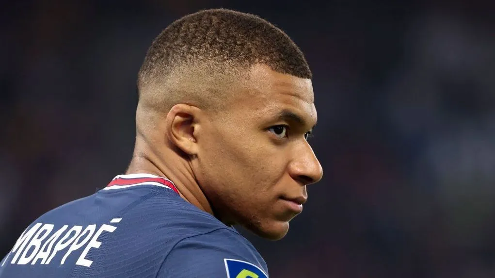
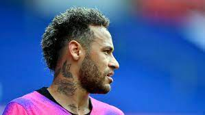

Os 8 melhores do PSG
Aqui você verá os melhores do PSG neste site caseiro com o intuito de
aprendizado próprio
8.Kylian Mbappé

Foto do jogador Kylian Mbappe
Atacante francês, considerado uma das maiores
promessas do futebol mundial, vencedor
da Copa do Mundo em 2018
7.Neymar Jr.

Foto do jogador Neymar Jr.
Atacante brasileiro, uma das maiores
contratações do futebol mundial e
peça-chave no atual elenco do PSG.
6.Zlatan Ibrahimovic
Foto do ex-jogador Ibrahimovic
Atacante sueco, marcou uma quantidade
impressionante de gols durante
sua passagem pelo clube.
5.Pauleta
Foto do ex-jogaor Pauleta
Atacante português, maior artilheiro
da história do PSG até o momento.
4.Ronaldinho Gáucho
.jpg)
Foto do ex-jogador Ronaldinho Gaúcho
Meia-atacante brasileiro, conhecido
por sua habilidade técnica
e dribles incríveis.
3.Rai
.jpg)
Foto do ex-jogador Rai
Meia-atacante brasileiro, peça
fundamental na conquista da Copa
da UEFA em 1996.]
2.George Weah
.jpg)
Foto do ex-jogador George Weah
Atacante, ganhou a Bola de Ouro
em 1995 enquanto jogava no PSG.
1.Jean-Pierre Papin
.jpg)
Foto do ex-jogador Jean-Pierre Papin
Atacante, vencedor da
Bola de Ouro em 1991.